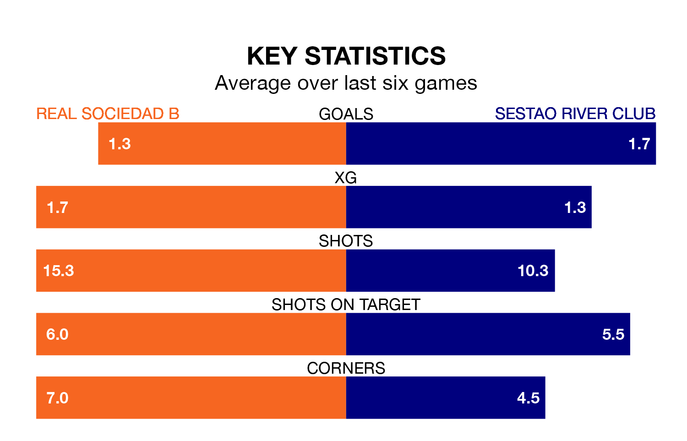

Real Sociedad B are heavy favourites to keep all three points at home in Saturday's early kick-off against Sestao River Club.
Sociedad B, who sit ninth in Primera Division RFEF Group 1 with 30 games played, are priced at 1.5 to seal victory.
Sitting nine places and 12 points behind them in the table, Sestao River Club are 5.2 to win with *Betting Company*, while the draw is at 3.4.
In the last 10 years, Sociedad B and Sestao River Club have played each other on eight occasions. Sociedad B won one of them, Sestao River Club two, and they drew five times.
On average, Sociedad B scored 1.2 goals and Sestao River Club 1.1 in those matches.
Their last meeting was on September 17, when they played out a 0-0 draw.
With 25 goals in 29 games so far this season, Sestao River Club are scoring at below the league average rate with 0.9 goals per game. And they are conceding more than average, letting in 40 goals at a rate of 1.4 per game.
Sociedad B, meanwhile, are average scorers, with 1.1 goals per game. They have also conceded 1.1 goals per game.
In Ekain Azkune Astarloza, the hosts have one of the league's sharpest shooters so far this season. He has notched seven goals in 19 appearances, to sit fifth in the scoring charts.
His goal rate of one every 194 minutes is quicker than that of Aitor Aranzabe Etxabe, the away side's top scorer with a goal every 373 minutes, and a total of five goals in 24 games.
Sociedad B are in mixed form in Primera Division RFEF Group 1, with two wins and two draws from their last six games.
With two wins and a draw over that period, Sestao River Club's form is slightly worse – they have taken seven points from 18, compared to Sociedad B's eight.
Sociedad B's last match was on Sunday, a 1-1 draw against Arenteiro, with Pablo Marín getting the goal for Sociedad B.
Sestao River Club lost 4-3 against CD Lugo last time out, on March 24, with Jon Cabo Madariaga and Leandro Martínez Ortiz on the scoresheet.
Updated: 16:41 (UTC), 04/04/24